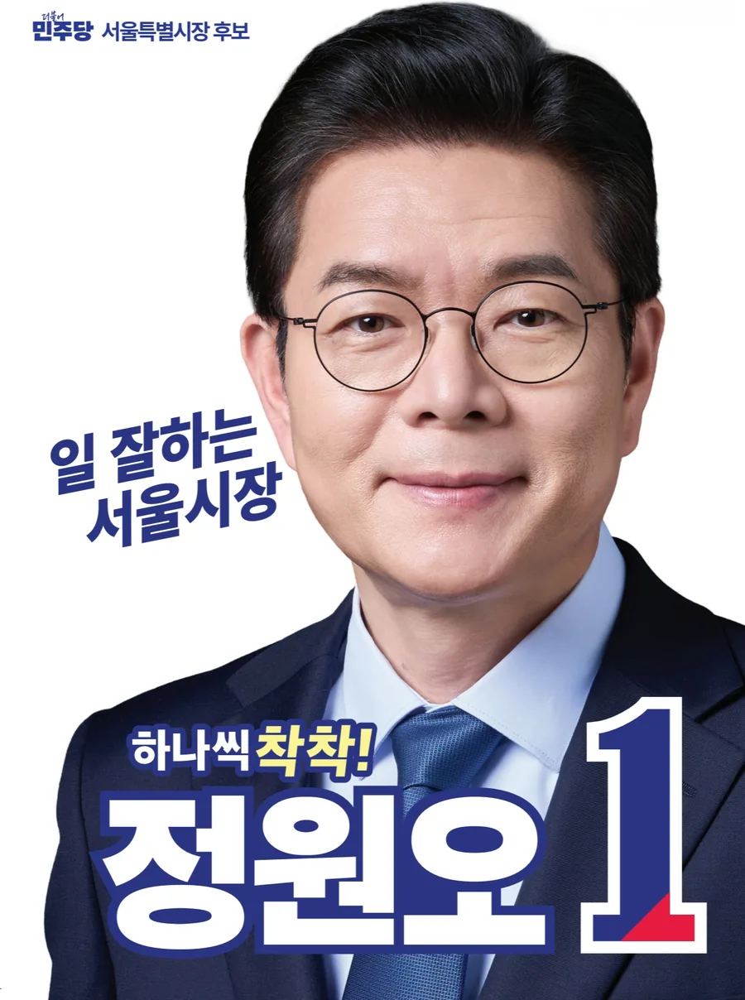

하나씩 착착!
말보다 결과로 증명하는 행정.
세금을 시민의 삶에 쓰겠습니다.
서울시장은 시민의 삶을 지키는 자리입니다.
우리가 싸워야 할 것은 시민의 불편함입니다. 우리가 서 있어야 할 곳은 시민의 삶 한복판입니다.
말보다 결과로, 성과로 증명하는 행정. 시민이 체감하는 변화를 만들겠습니다. 세금을 시민의 삶에 쓰겠습니다.

성동구청장 재임 12년간 만든 변화는 국가 표준이 됐습니다. 성동구에서 만든 전국 최초 정책들이 이듬해 국회를 통과했습니다.
서울의 도시·산업 큰 그림. 1대 목표 아래 2대 미래혁신도심, 3대 창업클러스터, 4대 특구 파이프라인을 동시에 가동합니다.
뉴욕·도쿄와 경쟁하는 G2 수도
기존 3도심을 5도심 체제로
청년창업거점, 신성장엔진 가동
신성장동력 거점, 성과를 세계로
시민의 일상을 받치는 9개 분야 정책. 안전·복지·노동부터 환경·반려동물까지, 사후 복구가 아닌 선제적 예방으로 접근합니다.
‛세 · 아 · 정'은 ‛세금이 아깝지 않은 정책'의 줄임말입니다. 시민의 문자 한 통, 제안 하나하나를 정책으로 바꾸겠습니다. 일상에서 매일 마주치는 작은 변화 5가지.
25개 자치구마다 7개 핵심 공약을 준비했습니다.
오전 6시 ~ 오후 6시
전국 모든 사전투표소에서 투표
오전 6시 ~ 오후 6시
내 주소지 투표소에서 투표
📋 준비물: 주민등록증, 운전면허증 등 사진이 부착된 신분증
📍 내 투표소 확인: 중앙선거관리위원회 (☎ 1390)